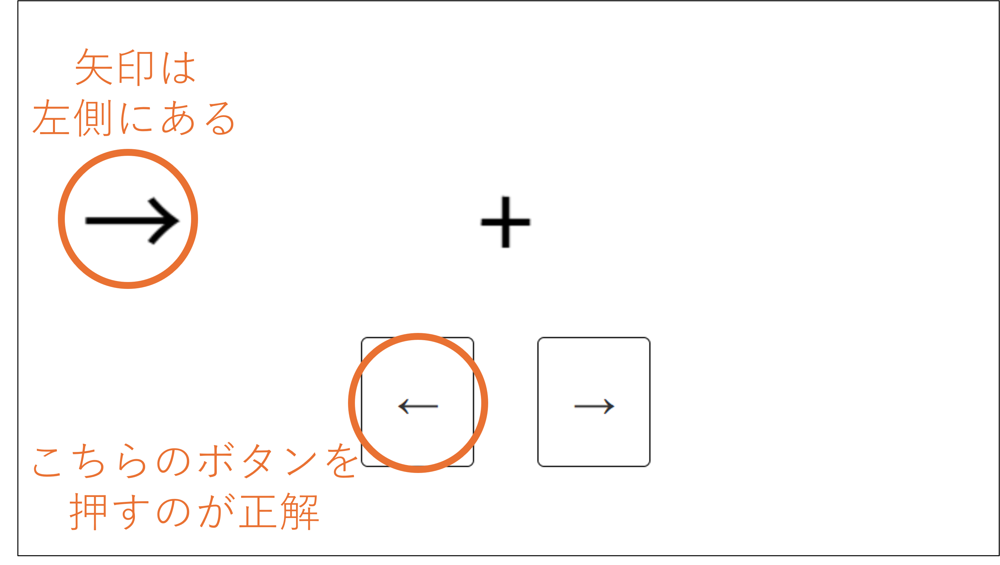

<!DOCTYPE html>
<html>

<head>
    <title>My experiment</title>
    <script src="https://unpkg.com/jspsych@8.2.1"></script>
    <script src="https://unpkg.com/@jspsych/plugin-html-button-response@2.1.0"></script>
    <script src="https://unpkg.com/@jspsych/plugin-html-keyboard-response@2.1.0"></script>
    <script src="https://unpkg.com/@jspsych/plugin-image-keyboard-response@2.1.0"></script>
    <script src="https://unpkg.com/@jspsych/plugin-canvas-button-response@2.1.0"></script>
    <script src="https://unpkg.com/@jspsych/plugin-canvas-keyboard-response@2.1.0"></script>
    <script src="https://unpkg.com/@jspsych/plugin-image-button-response@2.1.0"></script>
    <script src="https://unpkg.com/@jspsych-contrib/plugin-pipe"></script>
    <script src="https://unpkg.com/@jspsych/plugin-preload@2.1.0"></script>
    <link href="https://unpkg.com/jspsych@8.2.1/css/jspsych.css" rel="stylesheet" type="text/css" />
    <style>
        .jspsych-btn {
        padding: 20px 20px;
        font-size: 25px;
        gap: 300px;
        border-color: black;
        }
    </style>
</head>

<body></body>
<script>
    var wid=500;
    var hgt=100;
    /* initialize jsPsych */
    var jsPsych = initJsPsych({
        override_safe_mode: true,
        //on_finish: function () {
        //    jsPsych.data.displayData();
        //}
    });

    
    const subject_id = jsPsych.randomization.randomID(10);
    const filename = `${subject_id}.json`;
            

    function drawTri(c) {
        var ctx = c.getContext('2d');
        ctx.translate(100, 100);
        ctx.rotate(225*Math.PI/180);
        ctx.translate(-100,-100);
        ctx.beginPath();
        ctx.moveTo(50,50);
        ctx.lineTo(50,150);
        ctx.lineTo(150,150);
        
        // ctx.lineTo(50, 50*Math.sqrt(3));
        ctx.fill();
        // ctx.fillRect(50,50,100,100);
        ctx.setTransform(1, 0, 0, 1, 0, 0);
        ctx.rect(0,0,wid,hgt);
        ctx.rect(50,50,100,100);
        ctx.stroke();
        for (var i=0; i<1000; i++){
            var xx=Math.random()*wid;
            var yy=Math.random()*hgt;
            ctx.fillRect(xx,yy,1,1);
        }
        
    }

    function drawL(c){
        var ctx = c.getContext('2d');
        ctx.font = "48px sans-serif";
        ctx.fillText("左", 100, 100);
    }

    function putLL(c){
        var ctx = c.getContext('2d');
        ctx.font = '60px Roboto medium';
        ctx.textAlign = 'center',
        ctx.textBaseline = 'middle',
        ctx.fillText('+', wid/2, hgt/2);
        ctx.fillText('←', 30, hgt/2);
        //var img = new Image();
        //img.src = 'img/left.png';
        //img.onload = () =>{
        //    ctx.drawImage(img, 0,0,hgt, hgt);
        //}
    }

    function putLR(c){
        var ctx = c.getContext('2d');
        ctx.font = '60px Roboto medium';
        ctx.textAlign = 'center',
        ctx.textBaseline = 'middle',
        ctx.fillText('+', wid/2, hgt/2);
        ctx.fillText('←', wid-30, hgt/2);
        //var img = new Image();
        //img.src = 'img/left.png';
        //img.onload = () =>{
        //    ctx.drawImage(img, wid-hgt,0,hgt, hgt);
        //}
        
    }

    function putRL(c){
        var ctx = c.getContext('2d');
        ctx.font = '60px Roboto medium';
        ctx.textAlign = 'center',
        ctx.textBaseline = 'middle',
        ctx.fillText('+', wid/2, hgt/2);
        ctx.fillText('→', 30, hgt/2)
        //var img = new Image();
        //img.src = 'img/right.png';
        //img.onload = () =>{
        //    ctx.drawImage(img, 0,0,hgt, hgt);
        //}
    }

    function putRR(c){
        var ctx = c.getContext('2d');
        ctx.font = '60px Roboto medium';
        ctx.textAlign = 'center',
        ctx.textBaseline = 'middle',       
        ctx.fillText('+', wid/2, hgt/2);
        ctx.fillText('→', wid-30, hgt/2);
        //var img = new Image();
        //img.src = 'img/right.png';
        //img.onload = () =>{
        //    ctx.drawImage(img, wid-hgt,0,hgt, hgt);
        //}
    }

    function putFix(c){
        var ctx = c.getContext('2d');
        ctx.font = '60px Roboto medium';
        ctx.textAlign = 'center',
        ctx.textBaseline = 'middle',
        ctx.fillText('+', wid/2, hgt/2);
    }
    /* create timeline */
    var timeline = [];

    /* preload images */
    var preload = {
        type: jsPsychPreload,
        images: ['img/left.png', 'img/right.png']
    };
    timeline.push(preload);

    /* define welcome message trial */
    var welcome = {
        type: jsPsychHtmlButtonResponse,
        stimulus: "準備ができたら下のボタンを押してください",
        choices: ['スタート']
    };
    //timeline.push(welcome);

    /* define instructions trial */
    var instructions = {
        type: jsPsychHtmlButtonResponse,
        stimulus: `
        <p>この実験では、表示される矢印の位置を判断してもらいます。</p>
        <p>矢印は画面中央の十字の左右どちらかに表示されます。</p>
        <p>十字の左側だったら左側のボタンを、十字の右側だったら右側のボタンを、</p>
        <p>できるだけ速く、でも間違えないように押してください。</p>
            <p>この実験では、どちら向きの矢印かは関係ありません。</p>
            </img>
      `,
        post_trial_gap: 1000,
        choices: ['次へ']
    };
    timeline.push(instructions);
    timeline.push(welcome);
    var tri_conditions = [
        {stimulus: putLL, correct_response: 0, cnd: 0},
        {stimulus: putLR, correct_response: 1, cnd: 1},
        {stimulus: putRL, correct_response: 0, cnd: 1},
        {stimulus: putRR, correct_response: 1, cnd: 0}
    ];

    /* define fixation and test trials */
    var fixation = {
        type: jsPsychHtmlKeyboardResponse,
        stimulus: '<div style="font-size:60px;">+</div><br><br><br><br><br>',
        choices: "NO_KEYS",
        trial_duration: function () {
            return jsPsych.randomization.sampleWithoutReplacement([250, 500, 750, 1000, 1250, 1500, 1750, 2000], 1)[0];
        },
        data: {
            task: 'fixation'
        }
    };

    var fixation2 = {
        canvas_size: [hgt*2.11, wid],
        type: jsPsychCanvasKeyboardResponse,
        stimulus: putFix,
        choices: "NO_KEYS",
        trial_duration: function () {
            return jsPsych.randomization.sampleWithoutReplacement([250, 500, 750, 1000, 1250, 1500, 1750, 2000], 1)[0];
        },
        data:{
            task: 'fixation'
        }
    }

    var test = {
        type: jsPsychImageKeyboardResponse,
        stimulus: jsPsych.timelineVariable('stimulus'),
        choices: ['f', 'j'],
        data: {
            task: 'response',
            correct_response: jsPsych.timelineVariable('correct_response')
        },
        on_finish: function (data) {
            data.correct = jsPsych.pluginAPI.compareKeys(data.response, data.correct_response);
        }
    };

    
    const save_data = {
        type: jsPsychPipe,
        action: "save",
        experiment_id: "iqgCEKzYqfq6",
        filename: filename,
        data_string: ()=>jsPsych.data.get().json()
    };

    var cvstest = {
        type: jsPsychCanvasButtonResponse,
        canvas_size: [hgt, wid],
        stimulus: jsPsych.timelineVariable('stimulus'),
        choices: ['←','→'],
        correct_response: jsPsych.timelineVariable('correct_response'),
        data: {
            task: 'response',
            correct_response: jsPsych.timelineVariable('correct_response'),
            cond: jsPsych.timelineVariable('cnd')
        },
        on_finish (data){
            data.correct = data.response == data.correct_response
        }
    }


    /* define test procedure */
    var test_procedure = {
        timeline: [fixation2, cvstest],
        timeline_variables: tri_conditions,
        repetitions: 10,
        randomize_order: true
    };
    timeline.push(test_procedure);

    /* define debrief */
    var debrief_block = {
        type: jsPsychHtmlButtonResponse,
        stimulus: function () {
            var c_trials = jsPsych.data.get().filter({ task: 'response', cond: 0 });
            var ic_trials = jsPsych.data.get().filter({ task: 'response', cond: 1 });
            var c_correct_trials = c_trials.filter({ correct: true });
            var ic_correct_trials = ic_trials.filter({ correct: true });
            var c_accuracy = Math.round(c_correct_trials.count() / c_trials.count() * 100);
            var ic_accuracy = Math.round(ic_correct_trials.count() / ic_trials.count() * 100);
            var c_rt = Math.round(c_correct_trials.select('rt').mean());
            var ic_rt = Math.round(ic_correct_trials.select('rt').mean());

            return `<p>位置条件です</p>
            <p>A条件の正答率は ${c_accuracy}% でした</p>
          <p>A条件の反応時間は ${c_rt}msでした</p>
          <p>B条件の正答率は ${ic_accuracy}% でした</p>
          <p>B条件の反応時間は ${ic_rt}msでした</p>
          <p>上の4つの数値をメモしてから、次へを押してください。結果を入力するためのリンクが表示されます。</p>`;

        },
        choices: ['次へ']
    };
    timeline.push(debrief_block);
    timeline.push(save_data);
    var inputdata = {
        type: jsPsychHtmlButtonResponse,
        stimulus: `<p>こちらの<a href='https://kanazawait.qualtrics.com/jfe/form/SV_8oaQcvtt9onFCx8'>リンク先</a>から
        結果を入力してください。今回の条件は<b>「位置条件」</b>です。</p>
        <p>入力できたらこの実験は終了です。ご協力ありがとうございました。</p>`,
        choices: ['終了']
    };
    timeline.push(inputdata);

    /* start the experiment */
    jsPsych.data.addProperties({condition: 'position'});
    jsPsych.run(timeline);

</script>

</html>